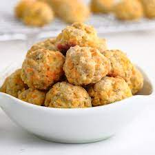
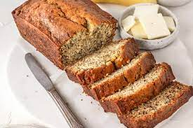

Cream Cheese Squares
The perfect treat for those with a sweet tooth! Sweet and creamy come together to make these DELICIOUS little squares. Perfect for a quick treat at home or a baked good for a party!

An incredibly fun and easy recipe sure to be the hit of any event! These bite-sized donut holes of meat and cheese fall apart in your mouth, go great with a side of ranch, and are sure to be everyones favorites in no time!
My mothers banana bread recipe! A forever classic where ever you are, especially getting banana bread at work, heck ya dude!
